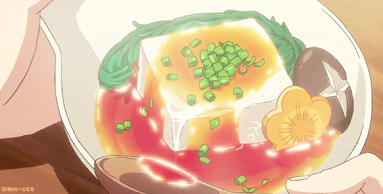

Receita de pudim de pão amanhecido
Aproveite o pão velho para preparar um pudim delicioso e econômico.
Tempo de preparo
-
Total: 1 hora e 20 minutos
-
Preparo: 20 minutos
-
Cozimento: 1 hora
Ingredientes
- 4 pães franceses amanhecidos
- 3 ovos
- 2 xícaras de leite
- 1 xícara de açúcar
- 1 colher de chá de essência de baunilha
- 1 xícara de açúcar (para o caramelo)
Modo de preparo
-
Quebre os pães: Quebre os pães em pedaços e coloque-os de molho no leite por 10 minutos.
-
Bata os ovos: Bata os ovos com o açúcar e a baunilha e misture ao pão amolecido.
-
Caramelize o açúcar: Caramelize o açúcar em uma panela e despeje em uma forma de pudim.
-
Despeje a mistura: Despeje a mistura de pão sobre o caramelo e asse em banho-maria a 180°C por 1 hora.
-
Deixe Esfriar: Deixe esfriar e desenforme antes de servir.